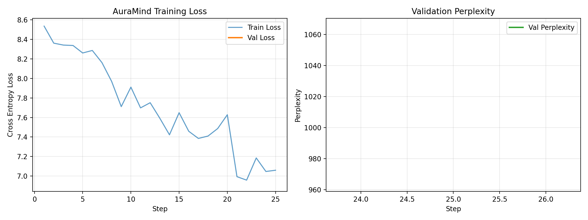

A 12.2M-parameter decoder-only Transformer built strictly from scratch for emotionally attuned dialogue. Combining RoPE, RMSNorm, SwiGLU, and emotion-conditioned cross-attention to resolve toxic positivity.
Compare the unconditioned baseline against AuraMind V3.2 to see how explicit emotion prefixing cures toxic positivity.
Modern Transformer primitives selected for maximum parameter efficiency and gradient stability.
Encodes relative token distances directly into query-key inner products, preserving conversation flow across 384 tokens without static absolute tables.
Replaces LayerNorm by enforcing root-mean-square normalization without mean-centering overhead, stabilizing deep gradients and reducing kernel latency.
Gated linear units with Swish activation in the feed-forward network (dim = 1024), providing nonlinear capacity and expressiveness per parameter.
Shares parameters between the 4,096-vocab input embedding and output projection matrix, saving 1,572,864 weights and regularizing vocabulary geometry.
User prompts and emotion tags are masked with PAD_ID (ignore_index), concentrating 100% of gradient backpropagation onto counselor generation.
Truncates tokens with probability < 0.05 × p_max, eliminating tail hallucinations and repetitive loops far more reliably than static top-p.
A complete 3,000-step training run executed in 64 minutes on a single consumer GPU.
3,000 steps • AdamW optimizer • Cosine learning rate schedule

The codebase is packaged cleanly with zero external framework lock-in.
git clone https://github.com/Arpit-Panigrahi/AuraMind-V3.git
cd AuraMind-V3
pip install -r requirements.txt